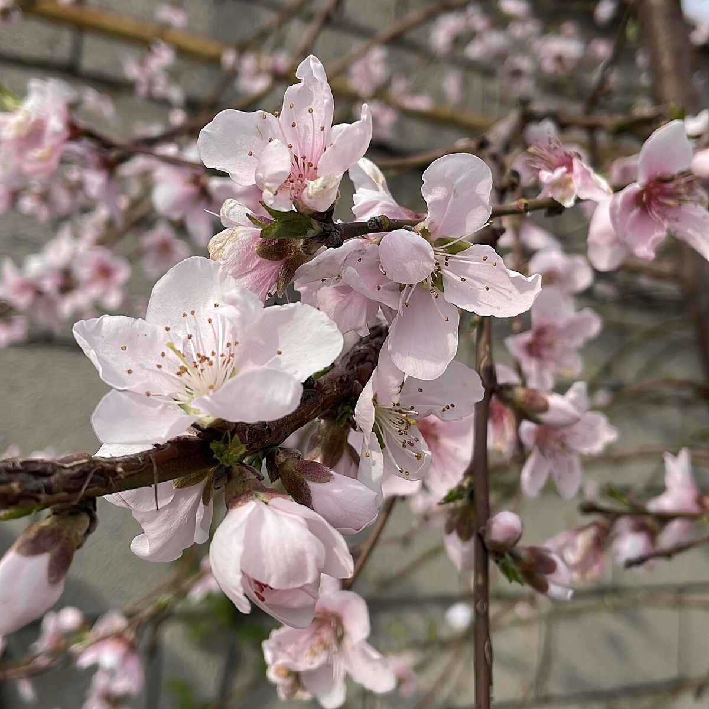
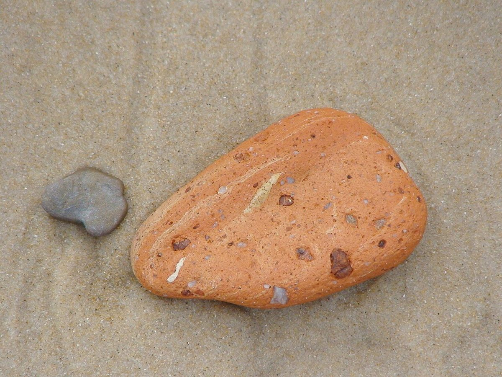

このページは実際のお客様の声ではありません。サンプルとして制作側が作成したイメージ例です。
口コミ(イメージ例)

イメージ例
仕上がりを見た瞬間、思わず声が出ました。自分の手を何度も見てしまいます。
※制作側が作成した創作文です。
イメージ例
話しやすい雰囲気で、気がつくとリラックスして過ごせていました。帰り道、指先を見るたびに少し嬉しくなります。
※制作側が作成した創作文です。
イメージ例
初めてで少し緊張していましたが、希望をゆっくり聞いてもらえて安心しました。また相談したいと思います。
※制作側が作成した創作文です。
